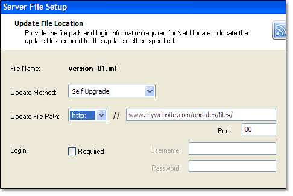
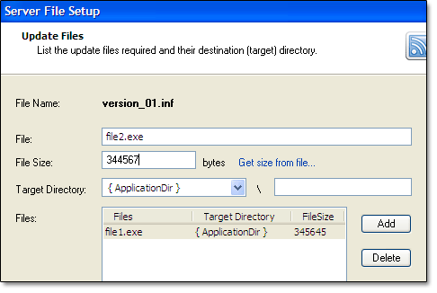
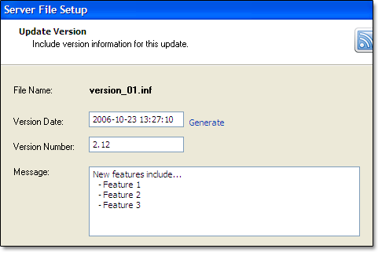
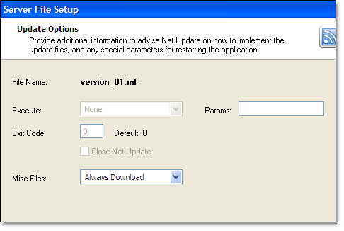
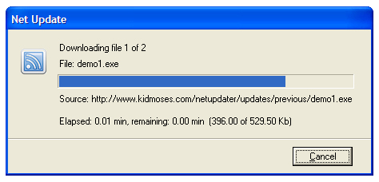

Getting Started
 The NetUpdater component enables Delphi developers to easily incorporate a
powerful, automatic update feature to their own software. Net Updater provides
a flexible, easy solution to manage all your update requirements.
The NetUpdater component enables Delphi developers to easily incorporate a
powerful, automatic update feature to their own software. Net Updater provides
a flexible, easy solution to manage all your update requirements.
[ Properties ]
[ Methods ]
[ Events ]
[ Using the Editor ]
Managing updates with NetUpdater is as easy as... well, 1,2,3!
The overall concept of managing the application updates is simple.
Start by dropping the component on a form, set a few properites and then use
the supplied editor to setup the server files.
Properties
Listed in the order they appear in the Object Inspector.
 AccessType -
AccessType -
Select how Net Update will connect with the update server.
 Preconfig -
Net Update will use the configuration set up for Internet Explorer on
the client computer. In general, this is the preferred option when you
do not know the configuration of the client computers, ie: home users. Preconfig -
Net Update will use the configuration set up for Internet Explorer on
the client computer. In general, this is the preferred option when you
do not know the configuration of the client computers, ie: home users.
Direct -
Select this option when you know the client computer is connected directly
to the internet, and is not using a proxy server.
Proxy -
Select this option if you know the client computer is connected to the
internet using a proxy server. If using this setting, enter the proxy
server information below.
Active -
Enables or disables NetUpdater checking for new updates. If enabled at runtime,
NetUpdater will check for updates as per the pre-set schedule.
AutoCheckDelay -
The amount of time in milliseconds to wait before checking for updates at startup.
CacheOptions -
Determines how the local cache will funtion.
coAlwaysReload - forces a download of the requested file, object, or
directory listing from the origin server, not from the cache.
coReloadIfNoExpireInformation - forces a reload if there was no Expires time
and no LastModified time returned from the server when determining whether to
reload the item from the network.
coReloadUpdatedObjects - reloads HTTP resources if the resource has been modified
since the last time it was downloaded.
coProgmaNoCache - forces the request to be resolved by the origin server, even if
a cached copy exists on the proxy.
coNoCacheWrite - does not add the returned entity to the cache.
coCreateTempFilesIfCantCache - causes a temporary file to be created if the file
cannot be cached.
coUseCacheIfNetFail - returns the resource from the cache if the network request for the
resource fails due to an ERROR_INTERNET_CONNECTION_RESET (the connection
with the server has been reset) or ERROR_INTERNET_CANNOT_CONNECT (the
attempt to connect to the server failed).
CheckDay -
Selects the day of the week to check for updates.
CheckTime -
Selects the time of day to check for updates if checking daily or weekly.
CloseEXE -
Will close the application, if open, prior to performing the actual file replacement
or running an external setup file.
CreateBackup -
Creates a backup of replaced files if Update Method for server files is set to Self Upgrade.
FTPPassive -
Sets passive mode if using FTP protocol.
HideFileLocation -
Select this option if you do not want NetUpdater to display the source
and destination locations during update.
InternetOptions -
Set the options to use if HTTP or HTTPS protocols are used.
ioIgnoreCertificateInvalid -
disables checking of SSL/PCT-based certificates that are returned from
the server against the host name given in the request. Net Update functions
use a simple check against certificates by comparing for matching host
names and simple wildcarding rules.
ioIgnoreCertificateDateInvalid -
disables checking of SSL/PCT-based certificates
for proper validity dates.
ioSecure -
uses secure transaction semantics. This translates to using Secure
Sockets Layer/Private Communications Technology (SSL/PCT) and is
only meaningful in HTTPS requests. By default this is set for HTTPS
requests and turned off for HTTP requests.
ioIgnoreRedirectToHTTP -
disables detection of this special type of redirect. When this flag
is used, Net Update functions transparently allow redirects from HTTPS
to HTTP URLs.
ioIgnoreRedirectToHTTPS -
disables detection of this special type of redirect. When this flag
is used, Net Update functions transparently allow redirects from HTTP
to HTTPS URLs.
ioKeepConnection -
uses keep-alive semantics, if available, for the connection. This flag
is required for Microsoft Network (MSN), NT LAN Manager (NTLM), and
other types of authentication.
ioNoAuthentication -
does not attempt authentication automatically.
ioNoAutoRedirect -
does not automatically handle redirection requests from server.
ioNoCookies -
does not automatically add cookie headers to requests, and does
not automatically add returned cookies to the cookie database.
ioNoCookieDialog -
does not show the cookie dialog if setting cookies.
LaunchApp -
Net Update will automatically launch the main application after checking for updates.
LaunchParams -
Enter any parameters required when the main application is launched.
If you are not sure what should be put here, then it should be left blank.
LogFile -
Check this option to have Net Update create a status log. This could be
helpful to troubleshoot problems with the update process.
Login -
Indicate whether your HTTP or HTTPS server requires a login.
Provide a Username and Password ONLY if your server
requires a login.
You can also specify login information dynamically,
when neccessary, in the built-in password-request
dialog, if the "Password Reqested" flag under the
Messages section in Wizard Options is selected.
MsgStrs -
Allows you to customize the NetUpdater messages. You can also
provide your own translations here. Note: the text %d and %s are used
as placeholders for dynamically loaded content and should not be removed.
Password -
Password to use for HTTP, HTTPS or FTP sites that require a login.
Port -
Port to use for HTTP, HTTPS or FTP downloads.
ProxyBypass -
Enter the IP address of websites to bypass using the proxy server
when connecting.
ProxyPassword -
If required, enter the Password needed to log into the proxy server.
ProxyPort -
Enter the port number of the proxy server. Default value is 8080.
ProxyServer -
If using a proxy server, enter the address of the server here.
For example, www.myproxyserver.com or 214.222.34.10.
ProxyUsername -
If required, enter the User Name needed to log into the proxy server.
RunMode -
Select the NetUpdater runtime mode.
Normal -
Net Update will run with normal user interacation, that is, messages
will be displayed and Net Update will wait for user input.
Silent -
Net Update will display its progress, but the user will not be able
to cancel the update or interact in any way with the process.
Hidden -
Net Update will perform all checks and updates in the background. The
user will not be able to see the progress and will not be able to
interact in any way with the process.
Schedule -
Select when you want NetUpdater to check for updates. For daily
and weekly settings, NetUpdater will check for updates at the time
scheduled. If checking for updates at startup, NetUpdater will do
the check immediately after launching the main application.
You can also check for updates at any time by setting the schedule
to when the application starts and calling NetUpdater directly from
your application with the Check method.
ShowMessages -
Select which messages you want the user to see. Tip: set the mNoUpdateAvailable
message to false if checking for messages at startup so the user does
not get confused.
mAskUpdate -
If checked, NetUpdater will prompt the user if an update is
found, otherwise, the update will start automatically.
mPromptCancel -
If checked and the user cancels an update, NetUpdater will prompt
the user again the next time it checks for updates and the same
update is found.
mConnLost -
NetUpdater will advise the user if the internet connection is lost
during download.
mHostUnreachable -
NetUpdater will advise the user if the host server cannot be reached.
mNoFile -
NetUpdater will advise the user if the server file cannot be found.
mNoUpdateAvailable -
NetUpdater will advise the user if no update is found. If performing
automatic updates, it is best to leave this option unchecked.
mPasswordRequest -
NetUpdater will request the user name and password if not already
provided for http password protected sites, or proxy servers which
require login.
StayOnTop -
Forces the download dialog to remain on top of other windows.
ThreadPriority -
Set the priority of the NetUpdater process compared to other
running processes. In general, this should be set to Normal.
If set to Low, NetUpdater will run when other processes are
idle. If set to High, system resources could be taxed as NetUpdater
will use all available resources.
URLFile -
Name of the update information file stored on the server.The default name
for this file is update_01.inf, however, you can name it whatever you
want. The URLFile and URLPath are probably the most important properties
to be set. This is where all the information about the update is
stored. Use the provided Editor to create
this file. Tip: some servers (Linux) are case sensitive.
URLPath -
Path to the URLFile on your server. The URLFile and URLPath are probably the
most important properties to be set. Tip: some servers (Linux) are case sensitive.
URLProtocol -
The Internet protocol used to download the update. Available options are
pHTTP, pHTTPS, pFTP or pFILE. If using the FTP protocol you will have to
supply a username and password.
UseRegistry -
Uses the registry to provide information about the status of the update. NetUpdater
will keep track of the initial installation version and date, as well as the
current update version and date. If you do not use the registry to track this
information, you will have to provide your own method.
UserName -
Username for use with an FTP site or HTTP/HTTPS site that requires login.
VersionControl -
Specifies how NetUpdater determines if a new update is available, either by
a new version number or a later version date.
VersionDate -
Release date of the current application version. Typically today's date.
VersionNumber -
Version number of the currently application release.
WarnOnCancel -
Provides a messagebox if the user cancels the update while downloading or installing.
WarnOnRestart -
Provides a warning to the user that the application has to be restarted to
finish the update. If set to false, the application will just close without
warning.
Methods
There are only two methods.
procedure Check();
Checks to see if there is an update. You do not need to call this procedure if
only checking using the schedule properites.
procedure Check(noMsg:boolean);
Checks to see if there is an update and set the mNoUpdateAvailable flag to
advise the user that no update is available if noMsg is set to true. You do
not need to call this procedure if only checking using the schedule properites.
Events
There are five events available.
OnCheck
Occurs just before NetUpdater checks for a new update.
OnCheckCompleted
Occurs just before NetUpdater checks to see if the update completed successfully.
OnCompleted
Occurs when the update completed successfully. Tip: if not using the UseRegistry
property to store information about the update, you may want to run your own
procedures here.
OnLaunchUpdater
Occurs before NetUpdater launches it own updater to perform the file
replacement or launch the external setup file. If [var Launch] is set to
false, NetUpdater will not launch its own updater. You will have to
provide your own update procedures.
OnSetRegistry
Occurs when an update completes but just before the registry is updated. Two
parameters [var newVerDate, newVerNum: String] provide
information on the new version date and number. You can use this information
in your own procedures. If UseRegistry property is set to false, the registry
is not updated.
Using the Editor
Use the supplied Editor to create the server file(s).
The first screen is much the same as first creating the agent file, except now you want to let
the Net Update agent know where the actual files to be replaced or external setup file
are located.
There are three options for the Update Method: Self Upgrade, External Setup or Redirect to URL.
Self Upgrade is used when Net Updated will replace the application's files itself. This option is best
used when only one or two files need to be replaced, ie: configuration files, pricing tables, etc.
If more than a couple of files need to be replaced, then you would probably want to run an External Setup file.
Lastly, you may not want to perform the update at all, but redirect the user to a website for more
information. In this case you would use the Redirect to URL option.
Note: when using External Setup, we recommend using Inno Setup available at www.jrsoftware.org
Update File Path identifies the protocol and path to the update files on the server.

Now select the files which will be replaced if using self upgrade, or the file to execute if using external setup.
File Name is the name you set up when creating the agent.
File is the file to be replaced or executed if using external setup.
This file will be stored on the server in the directory listed on the previous screen.
File Size will be filled in automatically, or you can browse for the file to get the size.
You can leave this at zero, but Net Update will run faster if provided the size now.
Target Directory is where the file will be placed on the local (client) computer.
There are nine predefined locations pretty well identifying all the directories you would want to start in.

Provide date stamp and version number as it pertains to this update.
Generate a new Date Stamp for this server file.
Provide the new Version Number if updating the main application itself, otherwise
use the current version number.
Provide a Message to inform the end user what the update is about.

Set a few more update options, if necessary.
Identify the executable file to Execute if using an External Setup application.
List any command-line parameters under Params to use with the External Setup application
For example, if using Inno Setup, you could use "/SILENT" here to run the setup without
user intervention.
Provide a Exit Code for the External Setup application so Net Update knows when it has finished.
Identify how Misc Files are to be treated, ie: always downloaded or only if size is different.

That's all there is to creating the server files. Now load the files on your server in the
locations you specified...
... and test for a new update.

That's it!
The developers at KidMoses are confident that Net Update will meet all your
application update requirements. However, if you do have any questions, or
require assistance with integration into your own systems, please feel
free to contact us at
support@kidmoses.com.
We will be glad to answer all your questions, or provide a quote for any
customization you may require.
|